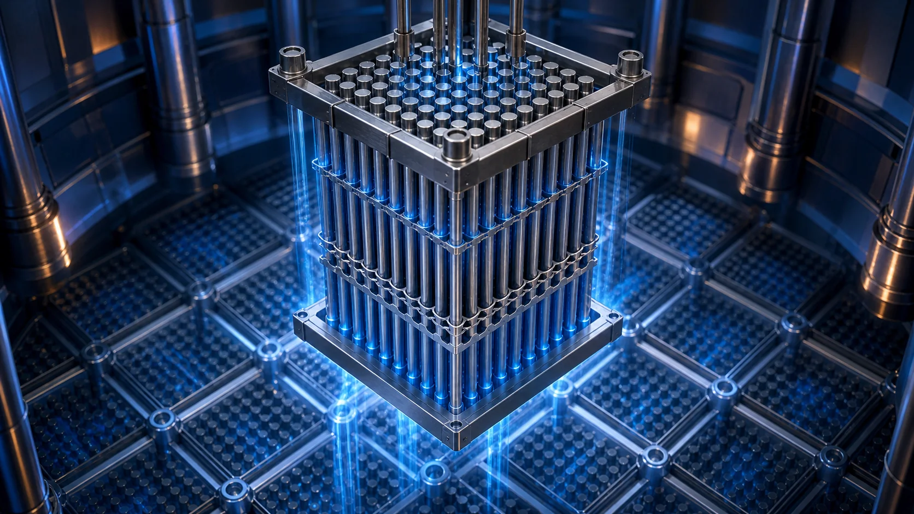
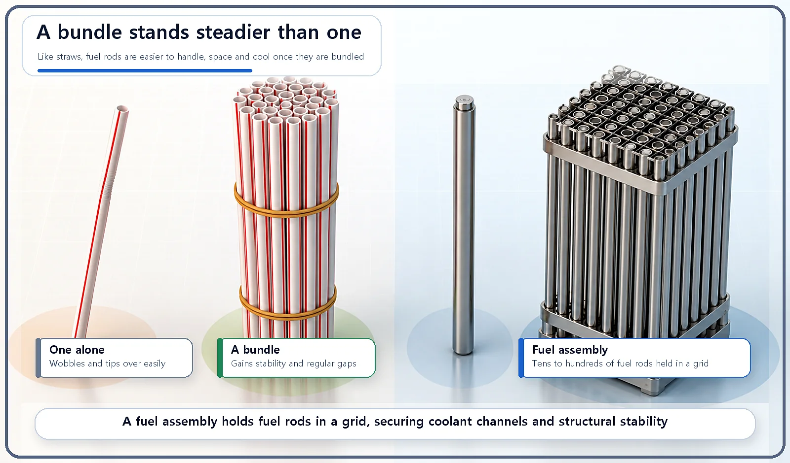
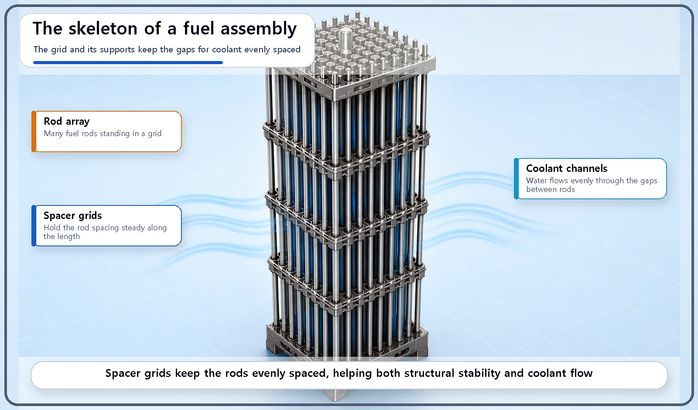

Reactor Components · 054
One Straw Falls, a Bundle Stands — Why Fuel Rods Come Packed in a Fuel Assembly
Like a banded bundle of straws, a fuel assembly turns loose rods into one stable unit with evenly spaced gaps for coolant.

A reactor holds tens of thousands of fuel rods, but they are never loaded one by one. Tens to hundreds of rods are held in a grid as a single fuel assembly. Bundling makes refueling practical, keeps the gaps for coolant evenly spaced, and stops long, thin rods from bending or shaking. [1]
Try standing a single straw on the table
Stand one drinking straw upright on a table and it tips over almost immediately. But gather a handful, line them up neatly and slip a rubber band around them, and something changes. The bundle stands steadily on its own, and between the straws, small evenly spaced gaps appear all by themselves.
Fuel rods inside a reactor are arranged in much the same way: not one by one, but bundled together like that handful of straws.
Many fuel rods, one "fuel assembly"
A reactor holds tens of thousands of fuel rods. Imagine loading and removing them one at a time. Every refueling would take an enormous amount of time and effort.
So in practice, tens to hundreds of fuel rods are stood side by side in a grid pattern and held together as one bundle, called a fuel assembly. The rods are locked in place by support plates at the top and bottom (the end fittings, or nozzles) and by grid-shaped supports spaced along their length, called spacer grids. Together they form one rigid unit. The reactor core is then filled by arranging many of these assemblies side by side.

Why go to the trouble of bundling them?
| Reason | What bundling achieves |
|---|---|
| Handling and refueling | Tens to hundreds of rods are lifted and moved as one unit |
| Even coolant channels | Spacer grids hold the gaps constant, so coolant flows evenly and removes heat evenly |
| Structural stability | Rods fixed in a grid resist bending and shaking from coolant flow and vibration |
First, handling and refueling become far easier. With tens to hundreds of rods tied into one assembly, a whole bundle can be lifted and moved in one go.
Second, it guarantees even channels for the coolant. The coolant (usually water) has to flow between the rods with a steady spacing so that heat is removed evenly. Because the spacer grids hold the gaps between rods constant, the coolant doesn't crowd to one side or bypass some spots; it flows evenly throughout, just like the regular gaps that appear between straws in a bundle.
Third, the structure is much more stable. A long, thin fuel rod standing on its own can easily bend or shake under flowing coolant or vibration. Tie many of them into a grid and fix them with supports, and they hold their shape far more steadily.

A cup of pencils works the same way: one pencil leans and rolls, but a full cup keeps every pencil upright and evenly spaced.
What the bundle means for running a reactor
Design at the assembly level, meaning how many rods go into each bundle, how far apart the grid holds them, and where the spacer grids are placed, becomes the basic unit for calculating how well the core transfers heat and how neutrons are distributed through it. Refueling also happens one assembly at a time, never one rod at a time. Deciding which assembly goes where in the core over its lifetime, known as the loading pattern, is itself an important part of reactor operation.
Two common misconceptions
"Fuel rods sit in the reactor one by one." No. They go in tied together, tens to hundreds at a time, in grid-shaped bundles called assemblies.
"The bundle is just for convenient storage and transport; it does nothing physical." No. The even spacing created by the spacer grids plays a direct part in making the coolant flow evenly.
Key takeaways
A fuel assembly is a grid of tens to hundreds of fuel rods, and the core is filled with many of them. Bundling makes handling and refueling practical, keeps coolant channels even, and gives the rods structural stability; refueling and core design work in assembly units, not single rods.